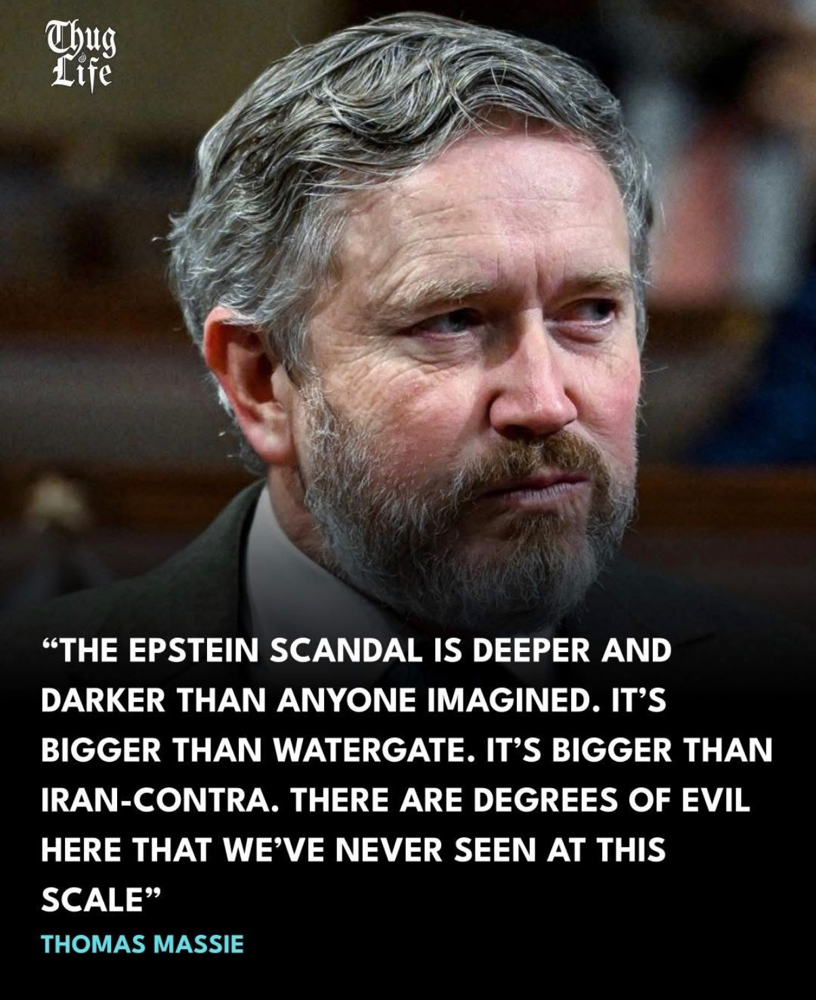

A graphic of Rep. Thomas Massie is all over social media this week, with his warning that the Epstein scandal is "deeper and darker" than anyone imagined, "bigger than Watergate" and "bigger than Iran-Contra." The words are real, and they are his. But they are not from this week. They come from interviews earlier this year — and they are going around again now because, on Wednesday, Massie did something no one else in this Congress has done twice: he forced a second House vote on the Epstein files.
Chapter OneThe warning
What Massie said, and when he actually said it
The Watergate and Iran-Contra comparison comes from a February 11, 2026 interview with Reason, in which Massie sat down with Zach Weissmueller to explain why he had staked his political career on getting the Epstein files released. Near the end of it, Weissmueller asked how the case should change the way Americans look at politics and power. Massie answered:
"You voted for four different administrations, and they're all part of the cover-up. So this goes back to the light sentence in 2007. That was the original DOJ, the original attorney general, the original U.S. attorney who cut this deal with Epstein, which we still don't know why they cut the deal. And so this is bigger than Watergate. If Watergate changed your perception of government, this should definitely do the same. This is bigger than Iran-Contra, because those only happened within one administration. This spans four administrations, and even more — an even higher number of attorneys general." — Rep. Thomas Massie (R–Ky.), The Reason Interview, February 11, 2026
His point was about time, not just scale. Watergate and Iran-Contra each happened inside a single administration. The Epstein record runs from the Bush administration's deal in 2007, through the Obama years, to Epstein's arrest under Trump in 2019, the Maxwell trial under Biden in 2021, and the files fight under Trump's second term — four presidents in all.
The other lines in the graphic come from a separate video interview clip, tagged to Cincinnati's Local 12, that has circulated since the spring of 2026. In it, Massie says the scandal is "deeper and darker" than anyone imagined, that there are "degrees of evil here that we've never seen at this scale," and that "our government was compromised by wealthy, connected billionaires, and by Jeffrey Epstein himself." He says the case is "not about Joe Biden or Donald Trump," and he describes what survivors told him:
"At the age of 14, these girls that were being sexually abused by Jeffrey Epstein were told if they could go find another girl to take their place, then they wouldn't have to be sexually abused. And some of them took that deal. It's one thing to be evil to a child. It's another thing to get a child to do evil." — Rep. Thomas Massie, video interview clip, circulating since spring 2026
That last account is Massie's account of what survivors told him. The court record corroborates the pattern behind it: a Palm Beach detective testified in the Giuffre case that victims were asked to bring their friends to Epstein's home, and were paid when they did; trial evidence in the Maxwell case described the same peer-recruitment structure. The exact words "find another girl to take their place" are Massie's, from the survivors he met — not a court transcript.

Massie closed the Reason interview with the line that has outlived the rest of it:
"It's a big club, and you're not in it. ... If you can't take up for kids who are being sex trafficked, who will you take up for?" — Rep. Thomas Massie, The Reason Interview, February 11, 2026
Chapter TwoThe vote it forced
218 signatures, a second discharge petition, and a lame-duck clock
On Wednesday, November 11, 2026, Massie's discharge petition for the Epstein Files Transparency Act II reached the 218 signatures needed to force a House vote. Rep. John Garamendi of California provided the 218th signature, a day after Rep. Adam Smith of Washington signed as the 217th. The count had sat at 216 since mid-September. All 214 Democrats signed, along with four Republicans: Massie, Nancy Mace and Ralph Norman of South Carolina, and Brian Fitzpatrick of Pennsylvania.
A discharge petition is how rank-and-file members go over the Speaker's head. Massie filed this one, Petition No. 27, on August 31. He had already done it once: his first petition forced the vote on the original Epstein Files Transparency Act, which the House passed 427–1 on November 18, 2025. President Trump signed it the next day, November 19, 2025, as Public Law 119-38. It ordered the Justice Department to make its Epstein records public by December 19, 2025.
The second bill exists because, in Massie's telling and in the view of the state attorneys general who back it, the first law had no teeth. The Epstein Files Transparency Act II, H.R. 9694, was introduced July 15 by Massie with Democratic Reps. Ro Khanna and Teresa Leger Fernández. Its Senate companion, S. 5005, is led by Sens. Jeff Merkley and Ben Ray Luján. The bill would:
Let Epstein survivors, state attorneys general, district attorneys, authorized state officials, and members of Congress sue the U.S. attorney general for withholding, redacting, delaying, concealing, removing, or failing to publish Epstein records.
Give survivors the right to obtain unredacted federal records about themselves and the harm they experienced, including FBI interview reports.
Require the Justice Department to give state and local prosecutors the unredacted records they need to investigate, including secure access to classified materials.
Seventeen state attorneys general urged Congress to pass it in October 2026.
Reaching 218 signatures does not put the bill on the floor the same day. Under House rules, the motion sits on the Discharge Calendar for at least seven legislative days. After that, one of the signers must offer the motion, and the Speaker then has two legislative days to act. Given the Thanksgiving recess, floor action could come as early as December 2 or 3. This is the eighth discharge petition to reach 218 signatures in the 119th Congress.
The clock is short. The House majority changes hands on January 3, 2027, after the Democrats' midterm victory, and all pending petitions expire when the 119th Congress ends that day. A December 11 deadline to fund the government is also bearing down. Even if the House passes the bill in early December, the Senate has to act — its version has only Democratic sponsors so far — and the bill would then need the president's signature. Trump signed the first act, which Congress passed overwhelmingly. Whether his administration will accept a bill that exposes the Justice Department to lawsuits is an open question.
For Massie personally, the vote would be among his final acts. He was defeated in the May 19, 2026 Kentucky Republican primary by Ed Gallrein, a Trump-backed challenger, in what was reported as the most expensive House primary in history, with more than $32 million spent. He leaves Congress on January 3, 2027.
Chapter ThreeThe 2008 deal
The plea agreement Massie keeps coming back to
Everything Massie says about this case goes back to the deal cut in 2007 and 2008. The Justice Department's own Office of Professional Responsibility investigated it and published its findings in November 2020. Here is what that report establishes.
Palm Beach police began investigating Epstein in 2005, after a 14-year-old girl reported being sexually molested at his home. The FBI brought the matter to the U.S. Attorney's Office for the Southern District of Florida, which opened a federal investigation with the knowledge of then–U.S. Attorney R. Alexander Acosta. Federal prosecutors prepared a case that could have brought federal sex-trafficking charges. Instead, on September 24, 2007, the office signed a federal non-prosecution agreement: Epstein would plead guilty to state charges, and in exchange the federal government would end its investigation and forgo federal prosecution. The agreement also extended immunity to potential co-conspirators.
On June 30, 2008, Epstein pleaded guilty in Florida state court to felony solicitation of prostitution and procurement of a minor for prostitution. He was sentenced to 18 months in the Palm Beach County jail. He served about 13 months, most of it on work release that let him leave the jail for up to 12 hours a day, six days a week, to work from his office. He registered as a sex offender on his release in 2009.
The part the victims were never told
The non-prosecution agreement was negotiated in secret, and Epstein's victims were not told about it before it was signed. In February 2019, a federal judge ruled that the government had violated the Crime Victims' Rights Act by failing to notify them. Acosta later became Secretary of Labor under President Trump. He resigned in July 2019, days after Epstein was arrested again on new federal charges.
That is why Massie keeps asking the same question, in both interviews: "The light sentence that was given to Jeffrey Epstein in 2008 that allowed him to victimize hundreds of more women — we want to know, why was he given that light sentence?" The Justice Department's report found poor judgment in how the deal was handled. It did not answer why the deal was offered in the form it was. That question is still open, and it is the question the files are supposed to answer.
Chapter FourThe record since
Arrest, death, conviction, and a memo that said "no further disclosure"
Epstein was arrested again on July 6, 2019, at Teterboro Airport in New Jersey, on new federal sex-trafficking charges in New York. He died on August 10, 2019, in federal custody in Manhattan. A joint Justice Department and FBI memo on July 7, 2025 confirmed the death was a suicide, after a review of the jail video, and said a review of more than 300 gigabytes of material found no incriminating "client list," no credible evidence that Epstein blackmailed prominent people, and no basis to investigate uncharged third parties. The same memo said Epstein harmed over one thousand victims, and that no further disclosure was warranted.
His longtime associate Ghislaine Maxwell was convicted in December 2021 on five counts, including sex trafficking of a minor, and sentenced to 20 years in prison in June 2022. Prosecutors showed at her trial that she recruited, groomed, and scheduled girls for Epstein, some as young as 14.
The files fight picked up again in 2025. In February of that year, Attorney General Pam Bondi said an Epstein client list was "sitting on [her] desk right now to review," then released 341 pages of documents to a hand-picked group of online influencers. The July memo reversed that, saying there was no list and nothing more to release. The House Oversight Committee subpoenaed the Justice Department on August 5, 2025, and on September 2 published 33,295 pages the department had produced. Committee Democrats said about 97 percent of it was already public.
Then came the law. The Epstein Files Transparency Act required the department to make the files public by December 19, 2025. The department said on January 30, 2026 that it had published 3.5 million responsive pages. But in a federal case, Phang v. Blanche, the Attorney General conceded he was in violation of the Act, according to a June 25, 2026 court ruling cited by the state attorneys general. In a January 8, 2026 letter, House Oversight Democrats wrote that what the department had produced under the statute amounted to less than 1 percent of the files, and that the department had since found more than a million additional potentially relevant documents. Attorney General Todd Blanche — Bondi was out of the job by April 2026 — told the Senate Judiciary Committee on July 15, 2026 that the department had mistakenly released some victims' names while publishing millions of files.
That is the dispute Act II would send to a judge. Massie says the department has "flagrantly and consistently ignored" the disclosure law, and in his July 15 statement said it "continues to unlawfully withhold over 3 million Epstein files." Those are his allegations. The bill's lawsuit mechanism would let a court decide whether the department has complied — instead of leaving the argument to floor speeches.
Chapter FiveWhat the files fight is actually about
Redactions, names, and who gets to see their own records
Massie reviewed unredacted files at the Justice Department in early 2026, and what he says he found there is the core of his case. He says an FBI document lists Les Wexner — the former owner of Victoria's Secret, and Epstein's best-known financial backer — as a co-conspirator to child sex trafficking, not to tax evasion or money laundering. Wexner has not been charged in connection with Epstein's crimes. Massie also says he found FBI interview summaries, known as 302s, released as solid black boxes, and emails with the senders redacted — including one that read, "Thanks for the torture video. I really enjoyed it," which he says he traced to a man, not a woman as the redaction implied.
He also says the department's mistakes ran in both directions at once: it blacked out the names of alleged co-conspirators, and it published the names of victims. In the Reason interview he said victims' lawyers sent the department an email titled "Victims' Names" in June 2025 so the department could use it as a search list and not publish those names — and the department published the document with 31 of the 32 victims' names on it anyway. He calls that "criminal negligence." That is his characterization, and his accusation; the department has not conceded it was intentional.
That is why the survivor provision in Act II matters more than the politics around it. Survivors would get their own unredacted records, including their FBI interview reports — the files about what was done to them, which they have spent years trying to see. State prosecutors would get the unredacted records they need to bring their own cases. And if the department withholds, redacts, or delays, the people harmed could take the Attorney General to court instead of waiting on the next press conference.
ClosingWhat this means for the District
This is my view, and I am labeling it mine. I am independent. I am not a Trump supporter, and I am not a Democrat, and I am not going to let either side claim this issue. The Epstein case is not about which president was in office. It is about children who were sexually abused, and a government that kept letting it happen, from one administration to the next.
I have supported enforcement against sex predators and child sex trafficking across state lines for a long time, and that is what this vote is actually about: survivors getting their own records, and state attorneys general getting the files they need to prosecute. That is not partisan. That is the law doing what the law is for.
Massie lost his primary after clashing with Trump over spending, tariffs, wars, and the Epstein files. Whether you agree with him on anything else, a man who puts his career on the line to get the files out is a man who means it. The House should vote, and the files should come out — all of them, with the victims' names protected and the rest of it open. If you can't take up for kids who are being sex trafficked, who will you take up for?
— Aaron Michael Hightower, from the High Tower District